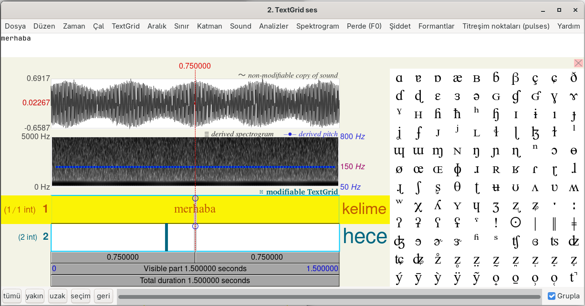
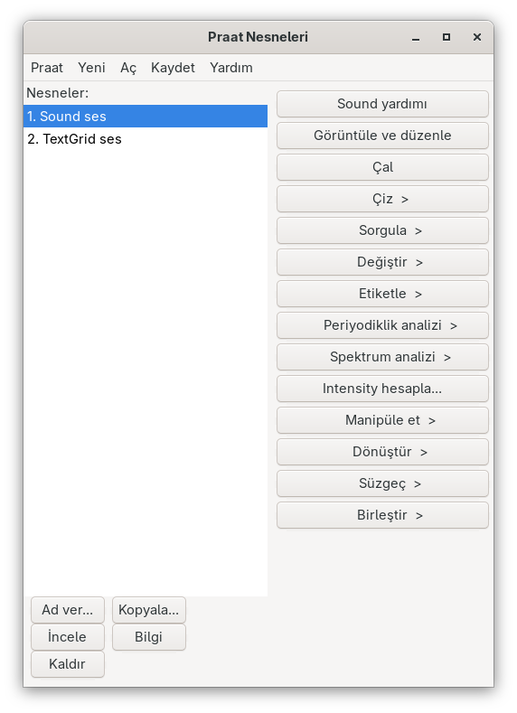
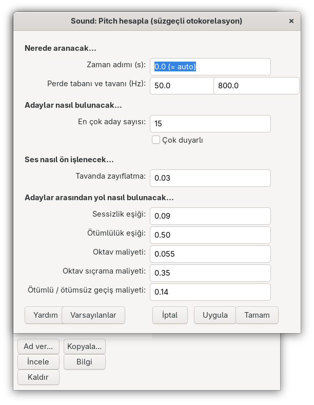

Aynı Praat, aynı ölçümler. Menüler, pencereler ve ses raporu artık Türkçe. İndirip klasöre çıkarmanız yeterli.
İndir
Çalışmanızda kullandıysanız kaynak gösterin: DOI 10.5281/zenodo.24525320 · kaynakça satırı · Code signing policy (kod imzalama)
Kurulum
- Zip dosyasını indirin.
Yukarıdaki düğme. Dosya yaklaşık 50 MB, genellikle "İndirilenler" klasörüne iner.
- Zip'i klasöre çıkarın.
Dosyaya sağ tıklayın, Tümünü ayıkla'yı seçin. Zip'in içinden doğrudan açarsanız Praat sözlüğü bulamaz ve İngilizce açılır.
- Praat.exe'ye çift tıklayın.
Praat Türkçe açılır, aşağıdaki Türkçe araçlar da menülerde hazır gelir. Programı başka bir yere almak isterseniz klasörün tamamını taşıyın, yalnızca Praat.exe'yi değil. Masaüstüne kısayol için Praat.exe'ye sağ tıklayıp Kısayol oluştur'u seçin.
- Windows uyarı verirse.
"Windows bilgisayarınızı korudu" yazısı çıkabilir. Program imzasız olduğu için böyle. Ek bilgi'ye, sonra Yine de çalıştır'a tıklayın. Bu yalnızca ilk açılışta sorulur.
- Arşivi indirin.
Linux (x86_64) için
.tar.gzdosyası. - Açın.
Dosya yöneticisinde "Buraya çıkar" ya da terminalde
tar xzf Praat-tr-*.tar.gz - Çalıştırın.
Klasörde
./praat. Türkçe araçlar menülerde hazır gelir.
Nasıl görünüyor



Türkçe araçlar
Sık yapılan ölçümler için hazır komutlar. Programla birlikte gelir, ayrıca kurulmaz. Menülerde ⁺Türkçe araçlar başlığı altında çıkar. Değerler Praat'ın kendi ölçümleridir, normatif eşik gösterilmez.
- Ses kalitesi raporu
- Perde istatistikleri, jitter, shimmer, HNR ve CPPS tek pencerede. İsterseniz CSV olarak kaydeder.
- Spektral eğim ölçüleri
- H1-H2, H1-A1, H1-A3, LTAS eğimi, alfa oranı.
- Kepstrum grafiği (CPP)
- Seçilen anın kepstrumunu çizer, CPP'yi işaretler ve bütün sesin CPPS değerini verir.
- Etiketli aralıkları ölç
- Her etiketli bölüm için süre, perde, şiddet, F1 F2 F3. Sonuç CSV tablosu.
- Ünlü grafiği (F1-F2)
- Etiketli ünlüleri F1-F2 düzleminde çizer.
- Etiketli aralıkları WAV olarak kaydet
- Her etiketli bölümü ayrı ses dosyasına böler.
- Klasörün ses kalitesi
- Klasördeki bütün kayıtlar için tek tabloda ses kalitesi ölçüleri.
- Klasörü ölç
- TextGrid varsa etiketli bölümleri, yoksa kaydın tamamını ölçer.
- Klasörün duraklama analizi
- Duraklama sayısı ve süresi, konuşma oranı.
- Klasörü dönüştür
- Tek kanala indirme, örnekleme hızı değiştirme, süzgeç, ses düzeyi ayarı.
Sık sorulanlar
Ücretli mi?
Hayır. Praat da bu Türkçe sürüm de ücretsiz ve açık kaynaklı (GPL lisansı).
Ölçüm sonuçları İngilizce Praat'la aynı mı?
Evet. Yalnızca ekrandaki yazılar çevrildi, hesaplama kodu Praat'ın kendisi. Aynı kayıtta aynı ayarlarla aynı değerleri verir.
İngilizceye nasıl dönerim?
Nesneler penceresinde Praat › Ayarlar › Arayüz dili... menüsünden "İngilizce"yi seçin ve Praat'ı yeniden açın. Türkçeye dönmek için İngilizce arayüzde Praat › Settings › Interface language... menüsünden "Turkish".
Bilgisayarımdaki eski Praat'ı silmem gerekir mi?
Hayır. Bu sürüm kendi klasöründen çalışır, kurulu Praat'ı değiştirmez. İkisini yan yana kullanabilirsiniz.
Hazır scriptlerim çalışır mı?
Evet. Komutların iç adları İngilizce kaldı, To Pitch... gibi script satırları Türkçe arayüzde de aynen çalışır.
Mac'te kullanabilir miyim?
Henüz değil. Şimdilik Windows ve Linux sürümü var. Mac'te İngilizce Praat'ı praat.org adresinden indirebilirsiniz.
Yeni sürüm çıktığını nasıl anlarım?
Praat açılırken küçük bir pencere yeni sürüm olup olmadığını söyler. Yeni sürümü bu sayfadan indirip eski klasörün yerine koymanız yeterli.
Neler henüz İngilizce?
Grafik eksenlerindeki yazılar, hata mesajları ve Praat'ın yardım sayfaları. Menüler, ayar pencereleri, düzenleyici ve Bilgi penceresindeki ses raporu Türkçe.
Bir hata buldum ya da bir çeviri yanlış
GitHub hesabınız varsa sorun bildirim sayfasına yazabilirsiniz. Ekran görüntüsü eklemek çok yardımcı olur.
Hakkında
Türkçe arayüzü, terim sözlüğünü ve Türkçe araçları Abdullah Talha Korkmaz (Underday) hazırladı. Ses ve konuşma alanında çalışan klinisyenler, öğrenciler ve araştırmacılar Praat'ı kendi dillerinde kullanabilsin diye.
Kaynak göstermek için (APA):
Korkmaz, A. T. (2026). Praat Türkçe: Praat için Türkçe arayüz ve Türkçe araçlar [Bilgisayar yazılımı]. Zenodo. https://doi.org/10.5281/zenodo.24525320
Praat'ın kendisini de Praat'ın istediği biçimde ayrıca kaynak gösterin.
Terim seçimleri gerekçeleriyle birlikte depodaki terim listesinde. Bir terime itirazınız ya da öneriniz varsa sorun bildirim sayfasına yazabilirsiniz.